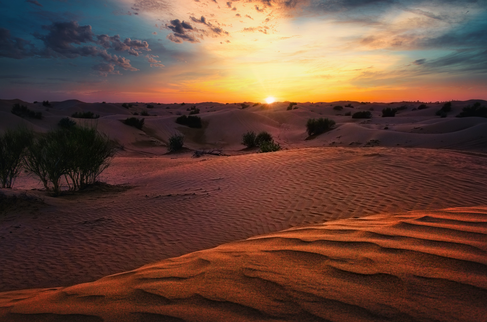
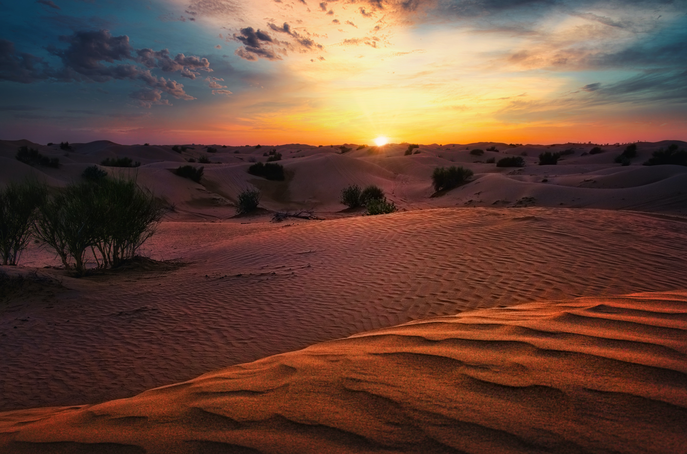

The Northern point lookout is a 25 kilometer path along the Moroccan coast facing the Strait of Gibraltar. Approximately 45 kilometers from Tangier, this route offers a stunning mountainous views, white beaches, and a bustling city in the distance.

The Casablanca cakewalk is a fan favorite. Just outside the famous city, this route extends for 28.9 kilometers along the Western coast of Morocco. Stunning beaches accompany riders as they travel South.
 

The Southern stroll is a 26 kilometer trek through the sand dunes of the Western Sahara dessert, with glistening beaches waiting at the final destination. At night, stars illuminate the dunes. This route is intended for more experienced travelers.